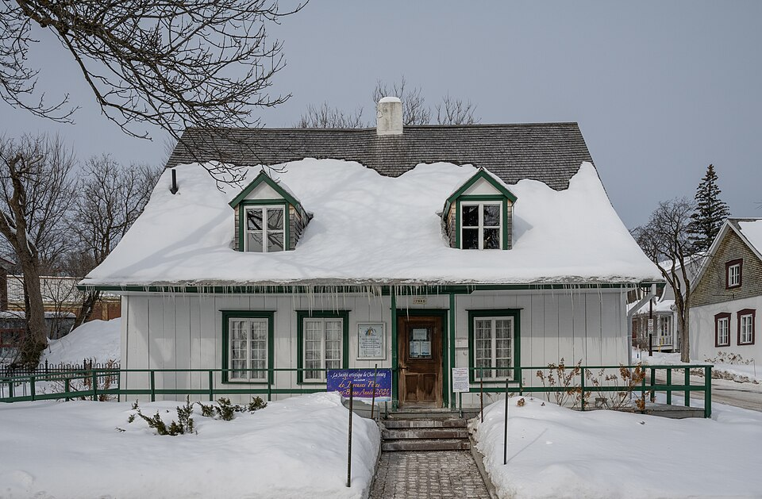
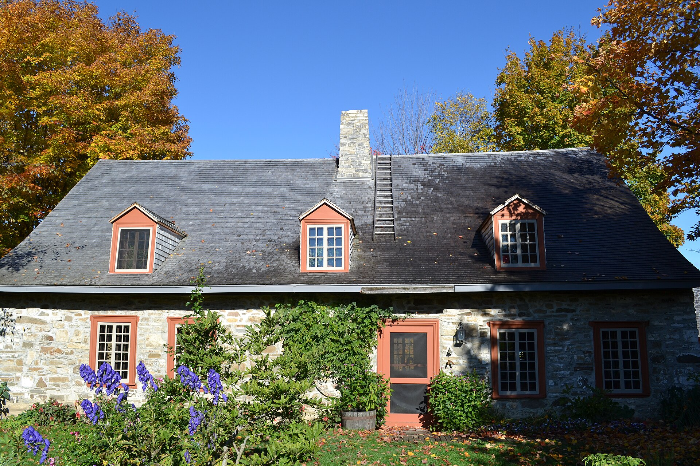

| Place | Local name | Phase years | Storeys | Roof | Window | Cladding | Garage |
|---|---|---|---|---|---|---|---|
| Charlesbourg (Trait-Carré) | Rural house of French inspiration La maison rurale d'inspiration française | 1665 – 1760 | 1.5 | gabled | – | wood-piece-sur-piece, fieldstone-rendered | – |
| Île d'Orléans | House of French inspiration La maison d'inspiration française | 1636 – 1760 | 1–1.5 | gabled-or-hipped-steep | vertical | fieldstone-rendered, wood | – |
| Lévis | French-regime house (Régime français) Régime français | 1636 – 1780 | 1.5 | gabled-or-hipped | – | fieldstone, stucco-render, wood-clapboard, wood-vertical-board | – |
| Québec City | One-storey rural house of French inspiration Maison rurale d’inspiration française | 1608 – 1760 | 1 | hipped | vertical | wood-piece-sur-piece, wood-board-vertical, stone, roughcast | – |

